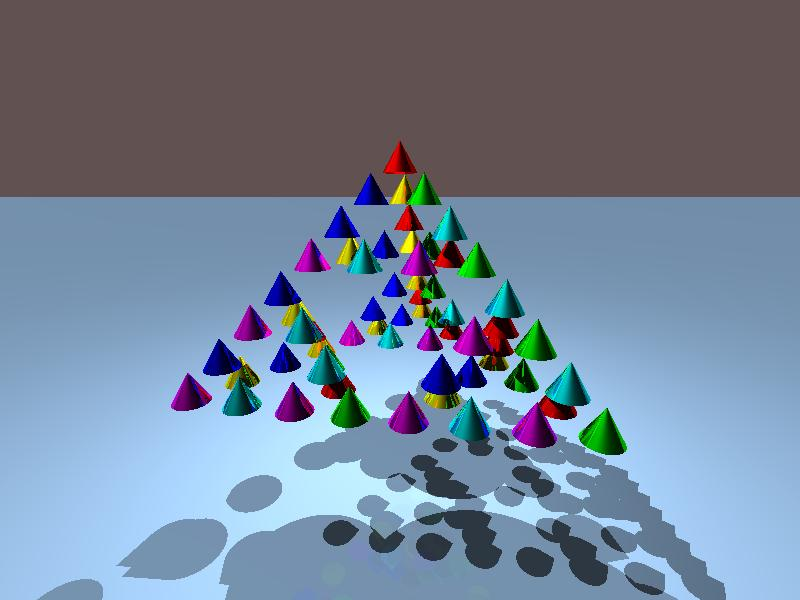
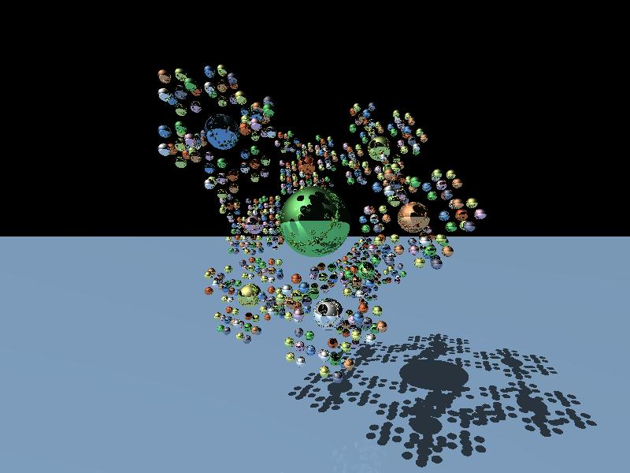
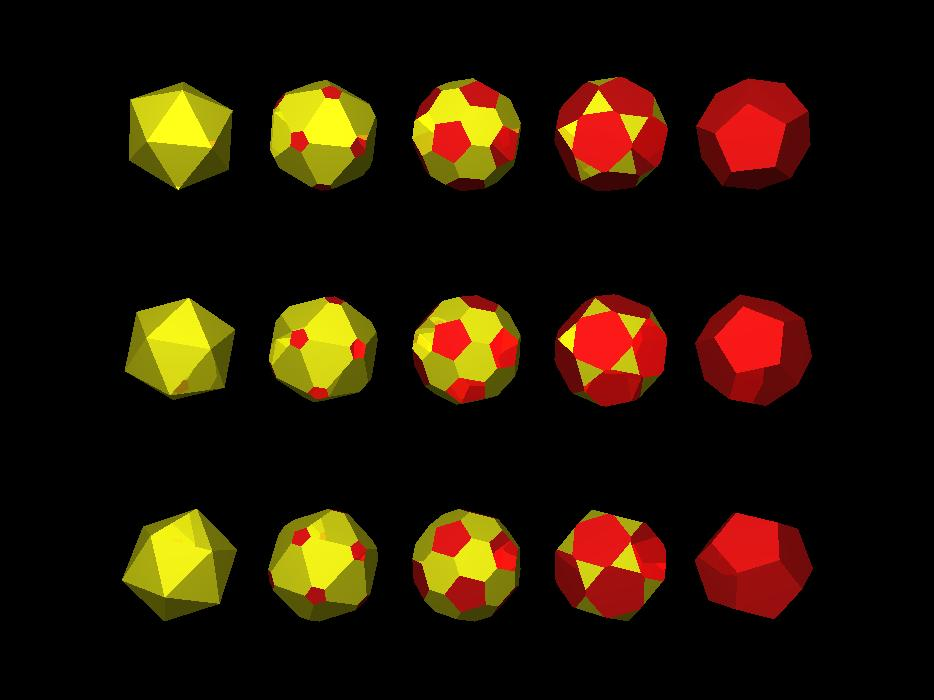

Note: the sample GML files from the contest
use the C-preprocessor directives
#define and #include.
Our program can't handle these directly,
but on unix-type systems the expanded GML file can be recreated as follows:
$ cpp -P file.gml file.out.gmlThis requires the included files to be in the same directory. For the samples here, the included files are colors.ins, surface.ins and util.ins. We provide both the original and expanded GML files.
cone-fractal.gml
is one of the samples from the contest, which expands to
this.

fractal.gml
is another of the samples from the contest, which expands to
this.

poly.gml
shows that a soccer ball is halfway between
a dodecahedron and an icosahedron.
